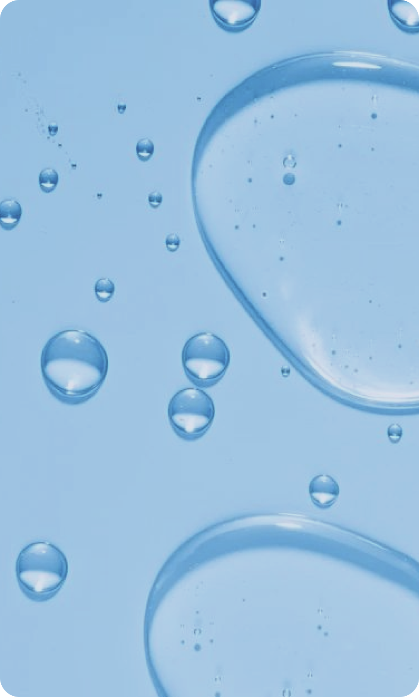
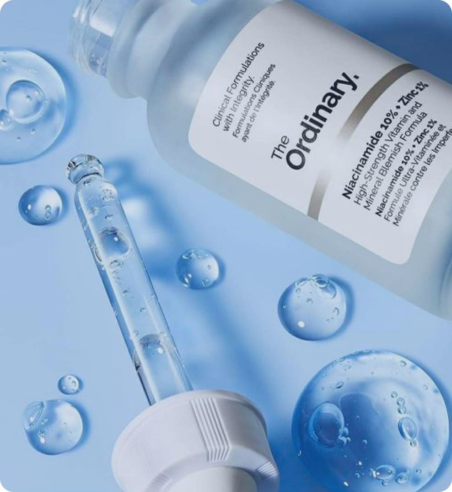

18 марта 2024
вещества
Ниацинамид, или витамин В3, является одним из самых популярных ингредиентов в уходовой косметике. Он обладает множеством полезных свойств для кожи и может помочь решить различные проблемы, такие как угревая сыпь, гиперпигментация, сухость и морщины.
Описание
Ниацинамид действует на кожу многогранно - он укрепляет защитный барьер, улучшает текстуру кожи, уменьшает воспаления, осветляет пигментацию и увлажняет. Он также способствует производству коллагена, что помогает уменьшить морщины и повысить упругость кожи. Этот ингредиент важен, потому что он подходит для всех типов кожи и может быть использован даже на самой чувствительной коже. Он не вызывает раздражение или пересушивание, поэтому подходит для ежедневного использования.
Обозначение в составе
Стандартное обозначение ниацинамида в составе вещества — Niacinamide. Может встречаться также обозначение vitamin B3.
 
Где содержится
Ниацинамид можно найти в различных уходовых средствах, таких как сыворотки, кремы, тоники и маски. Для жирной или проблемной кожи подойдут сыворотки с высокой концентрацией ниацинамида, которые помогут уменьшить воспаления и улучшить состояние кожи. Для сухой или зрелой кожи можно выбрать кремы с ниацинамидом, которые помогут увлажнить и питать кожу. Рекомендуемое содержание в средстве — 2-5%.
Применение
Ниацинамид — верный друг для любого типа кожи. Однако при его использовании важно следовать инструкциям на упаковке и начинать с низкой концентрации, особенно если у вас чувствительная кожа. Также ниацинамид может повысить чувствительность кожи к ультрафиолетовому излучению, поэтому вместе с ним рекомендуется использовать солнцезащитное средство.
Ниацинамид крайне полезен для всех типов кожи. Обладателям и обладательницам сухой кожи он рекомендован, поскольку он смягчает раздражительность, мягко питает и увлажняет ее.
Ниацинамид регулирует выработку себума, оказывает противовоспалительное и обеззараживающие действие, предотвращает раздражения и высыпания, сужает поры и матирует.
Ниацинамид рекомендуется использовать также обладателям чувствительной кожи, ведь он успокаивает и мягко увлажняет ее. Более того, ниацинамид способствует синтезу липидов, тем самым укрепляя защитный барьер кожи.